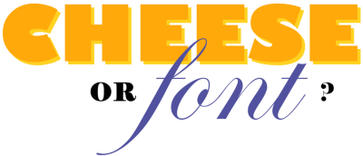

Friday, October the 5th, 2012
back to: title, date or indexes
This week in The Dabbler I take the opportunity to remind readers of the finest quiz game ever devised by humankind. Hooting Yardists, I know, have long ago fallen under its spell and probably fritter away at least two hours every day playing it. I know I do.
